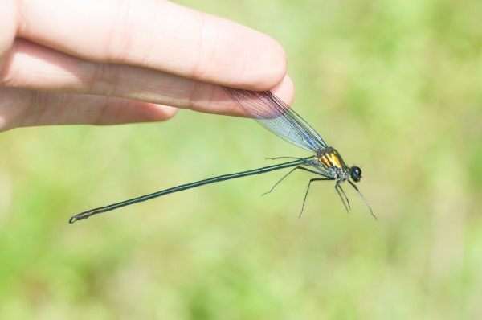
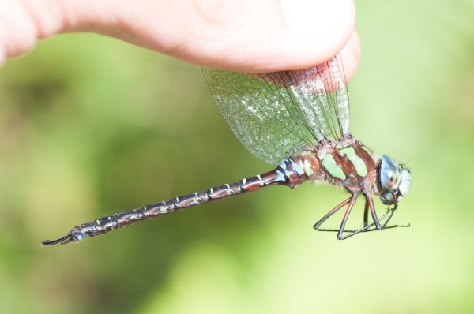
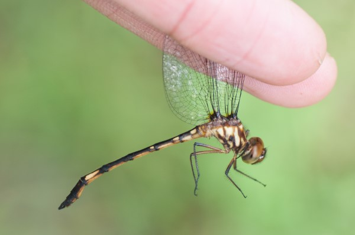
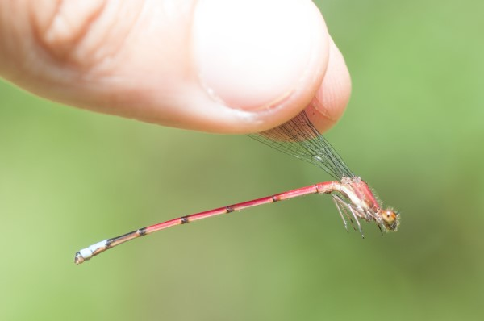
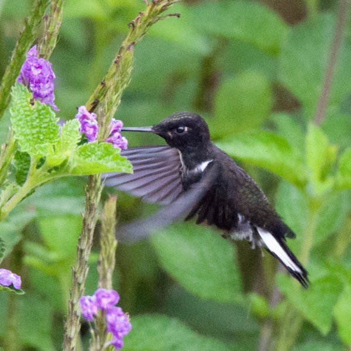
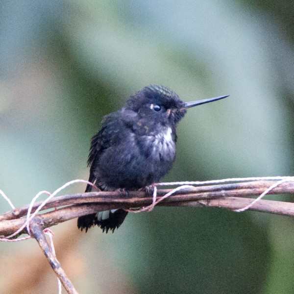
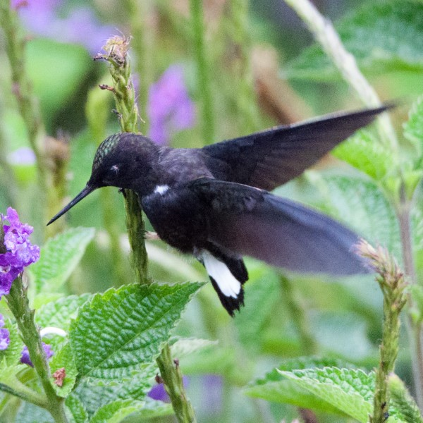
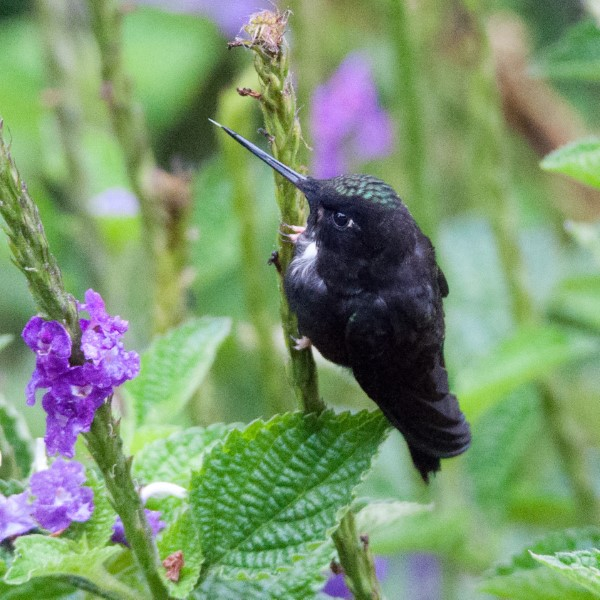
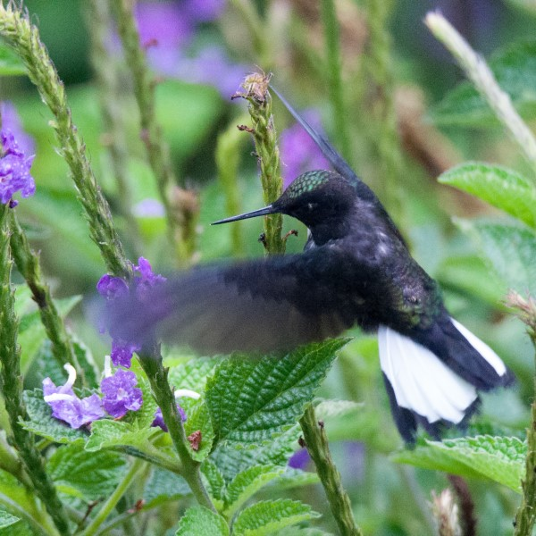

Sustainable Roots Biological Inventory
In February, 2022 I started volunteering for the Sustainable Roots Foundation in Cosanga, Ecuador. My main task is to conduct avian point counts on their newly acquired reserve land to determine what's there, but I am also attempting to do as complete a biological inventory as reasonably possible during my time here. I've started with butterflies and dragonflies which are two of my main taxa of interest and so far I have recorded 5 species of Odonates and over 30 butterflies.





Potentially undescribed hummingbird hybrid
In my first week as a volunteer for the Sustainable Roots Foundation a very unusual hummingbird showed up at the Cabañas Tamiaju garden. I have tentatively identified the bird as a Collared Inca X Tourmaline Sunangel which has never been documented before. Over the coming days I will be attempting to get a DNA sample to be sent to Dr. Jeff Skevington at Carleton University for confirmation.